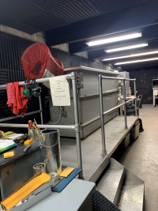

Education:
In 2002, I graduated from high school and embarked on the higher education portion of the professional journey. To this day, I continue to seek out educational opportunities...you're never too old to learn new things.
Truman State University
In 2002 I ventured to the big bustling metropolis of Kirksville, MO to attend Truman State University for my undergrad education. I spent a pretty fantastic 4 1/2 years in Kirksville, getting my bachelors of science in Criminal Justice Systems.
St. Louis Metropolitan Police Department Academy
I was not one of those people who knew what their life and career would look like from the get-go...and frankly, I'm still not that person. I chose to put in an application with the St. Louis Metropolitan Police Department because it seemed like a large enough department that I would be able to find my niche. I started the police academy in June of 2006 and learned a wealth of knowledge and skills in the eight month span of the academy, as well as meeting some of my best friends to this day.
University of Florida
Covid brought about challenges for everyone. For me, not being able to be around my people, friends and family, was my greatest struggle, but it also left me with some extra time on my hands. I had been looking a the forensic science graduate program at University of Florida for a significant length of time, but when I realized they had dropped the GRE requirement, I took that as my sign to pull to trigger and go back to school. From January of 2021 to December of 2023, I completed online coursework to obtain a Masters of Science in Pharmarcy with a focus on Forensic Science.
LaunchCode
And finally, since I have established that you are never to old to learn, I am in my early forties and completely venturing in a new direction with education. I have observed in over a decade of work in the field of forensic science that web-based applications are being used by multiple disciplines in the field to aid in doing our jobs better and more efficiently. For that reason, I want to be in the know. I want to know how these applications work and want to provide myself the knowledge to get involved in web-development that can better he field of forensic science.
Work Experience:
Since February of 2008, I have been a commissioned police officer for the City of St. Louis. I have worn a number of hats as a police officer, but most of my career has been spent in some division of the Crime Laboratory.
Patrol Officer
In February of 2008, I graduated from the police academy and began my career as a police officer in Central Patrol, the 4th District of the City of St. Louis. I spent approximately three and a half years patroling the streets of downtown St. Louis and got to know the many of the characters that inhabit the area. I learned a lot about myself and others in those three plus years, but what I really determined was that being a beat officer was not the best use of my skills and knowledge. When a position opened up, I applied for a spot in the crime scene unit and in 2011 I got the call the I would be transfered to the crime lab.
Evidence Technician
Patrol had some fun shifts, and also some not so fun shifts, but when I was transferred to the lab is when I really began to thrive. The summer of 2011 is when I began to learn about the ins and outs of the crime lab and crime scene processing. I learned how to document crime scenes using photographs and notes including measurements and sketches to aid in the process and how to properly search for and collect evidence. I completed rigorous training, both in the lab and with outside workshops regarding crime scene processing and specialized crime scene photography. For several months, I did field training with two of the most experianced Evidence Technicians in our unit and Christmas day of 2011 was my first day on my own as trained crime scene investigator. I spent six very exciting and often exhausting years in the Evidence Technician Unit and remain proficient in crime scene investigation to this day. I have provided testimony in numerous cases regarding my role as an Evidence Technician
Firearms Examiner
In 2017 an opportunity presented itself that was too good to pass up. I was given to opportunity to broaden my skills and knowledge in the lab by training to be a firearms examiner so I took a leap of faith and have been in that section since. I completed two years of training in the section involving microscopy, firearms identification, firearms safety, serial number restoration, and ballistic identification and comparision. After completing training, I completed a comprehensive competency exam prior to being able to conduct casework.
Organizations and Certification:
- IAI: International Association of Identification
- AFTE: Association of Firearm and Toolmark Examiners
- IAI CCSI: Certified Crime Scene Investigator
- 2011 to Present -
- 2017 to Present -
- 2013 to Present -